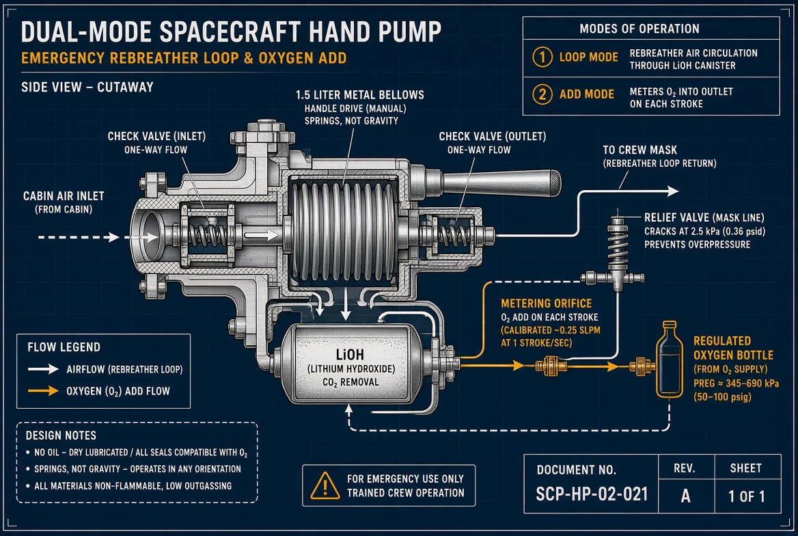
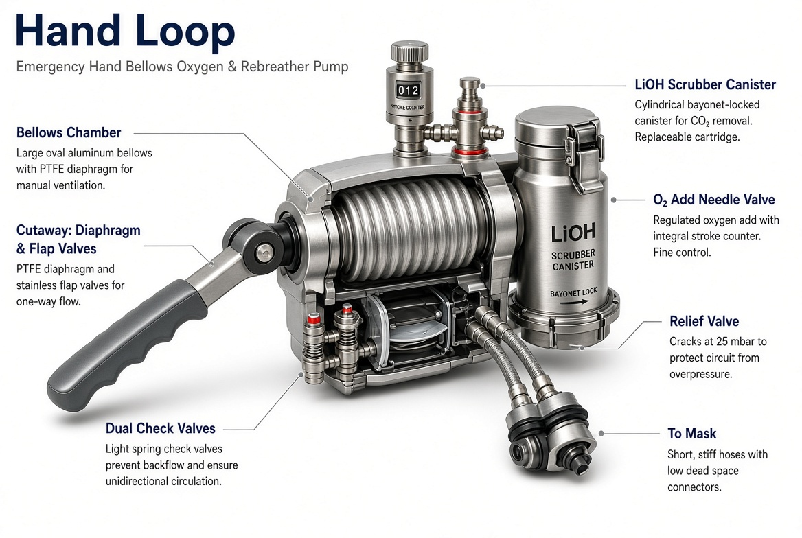

01 · FAN
The real failure
Apollo’s portable life support moved gas through lithium hydroxide with a fan, about six cubic feet a minute. The backup was an open purge to vacuum, about thirty minutes. A closed hand loop saves that gas.
Repo starbreath · concept unit
A manual bellows for emergency oxygen on a ship like Starship, or on the Moon. It pumps the rebreather loop when the fan dies, and meters oxygen into that loop. It does not compress bottle oxygen by hand.

Stored oxygen is already at pressure. What fails in a blackout is circulation. In microgravity there is no convection, so carbon dioxide pools at the face.
Apollo’s portable life support moved gas through lithium hydroxide with a fan, about six cubic feet a minute. The backup was an open purge to vacuum, about thirty minutes. A closed hand loop saves that gas.
A conscious person can drive a personal rebreather. The bellows is for an unconscious crew member, a dead cabin fan, or a canister you cannot breathe through yourself.
Cabin air is near one atmosphere, not pure oxygen. One Hand Loop on a bulkhead rail washes faces until power or a purge bottle is back. Oxygen still comes from the regulated bottles.
Do not replace suit cooling with a hand pump. Use the bellows to stay breathable long enough to reach the airlock. Keep an open-circuit purge bottle as the last path. Buddy hose still wins.
Springs move the check valves. Gravity does not. The unit works in free fall and in one-sixth g.
Inlet from mask or cabin, through the LiOH or soda-lime can, back to the mask or a face-level vent. Both check valves in series. This replaces the fan.
A needle valve from a regulated bottle or soft bladder feeds the bellows outlet. Each stroke doses a known volume. The stroke counter is the flow meter.

Sizing for washout, not suit cooling. A person at rest uses about 0.3 L/min of oxygen and makes about 0.25 L/min of CO2.
| Item | Target |
|---|---|
| Stroke | 1.5 L positive displacement |
| Rate | 20 strokes/min → about 30 L/min |
| Coverage | CO2 washout for one person, or two if the outlet is at the face |
| Not this unit | Suit cooling. That still needs water loop or open purge |
| Canister | Axial LiOH or soda lime, spring-packed, bayonet swap. About 1 kg, a few person-hours |
| Relief | Cracks before a hard stroke can load a mask or suit seal |
| Gas path | Stainless, aluminum, PTFE. No oil. Oxygen-compatible grease only, off the gas path |
| Drive | Long cabin handle, chest strap for one person, foot bar for the Moon |
| Dust | Bellows, not a piston. Lunar dust kills sliding seals |